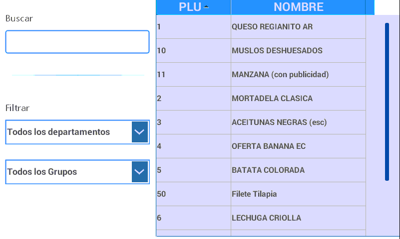
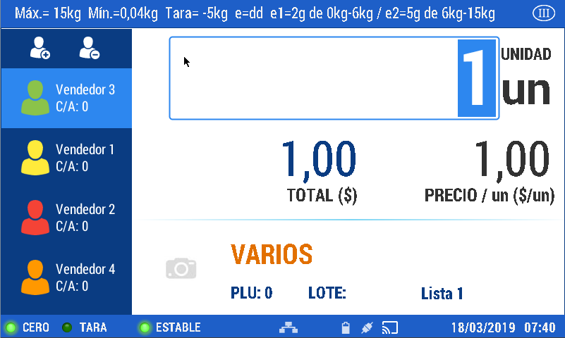

Items and Products
Ways to find an Item (PLU)
The scale is designed to search for items in several ways:
Free writing space.
Quick access (the products must be linked to the access’ keys).
Search by bar code or product’s name.
At Menu - CRUD’s - PLU you will find the necessary steps to create, edit, or delete an item (PLU) in the scale. To link the items to the quick access keys check the actions outlined at Menu - CRUD’s - Access
A. Free writing space.
As an example, we will execute the sale of a product registered in the scale as generic (weighable or non-weighable) and identified by default with the number zero.
This mode of sale does not require setting the PLU or the access.
Enter the number zero in the space for entering a text located in the bottom margin.
Press the key

Place the product to be weighted.

Press the key to enter the sale.
Remove the product from the platter.
Perform this operation with the total amount of products you have for sale.
Press the key to see the sale’s detail.

In this screen you can execute different actions:
- Cancel ticket: it deletes the ticket.
- Delete items: it deletes the selected item from the sale’s list.
- Sale without printed receipt: it allows you to close the sale without printing the receipt.
- Print: it prints the sale’s receipt.
- Reprint ticket: it prints an already printed receipt.
Copies: it determines the amount of copies to print.
- Select the option you need to finish.
When you press the numeric keypad, it enables the option to enter the received payment and to calculate the change for the client in case it is necessary (this information is printed when closing the sale)
Press the key to conclude.
B. Quick access
As an example, we will execute a sale by weight, of a product set in the scales as weighable plu
Press the quick access page where the product is registered

Press the quick access key corresponding to a weighable plu
Place the product for sale on the scale’s platter

Once it is stable, press
Then, remove the product from the scale.
Perform this operation with the total amount of products.
Continue with the steps outlined in the previous example.
With the objective to present several options included in the scale to commercialize products; now, we will describe the steps to follow to execute the sale of drained items using the quick access alternative.
To exemplify the commercialization of drained products, we will execute the sale of an item set in the scale under the name of Drained PLU
Press the quick access page where the product is registered

Press the quick access key corresponding to Drained PLU.

Put weight on the platter.
Press Next, you will see the following screen:
Press
First, place the container that will hold the product and then press continue
Place the drained product on the platter and press continue again

Add the liquid and press continue

Then, press continue

Then, press print
Then, remove the product from the scale
In case you want to weight another drained product, repeat the steps outlined.
C. Search by bar code or product’s name
As an example, we will execute a sale by unit, of a product generated in the scale as non-weighable plu
Press on the magnifying glass.
Upon accessing this option you can search in several ways:

- Press the key to activate the alphanumeric key: press the letters to write the product’s name you want to search for or switch to the numeric keypad and enter the product’s assigned code.
-Scrolling through the list shown.
- Using the set filters in the upper margin.
When you locate the item, you must select by pressing on it. The chosen product will be shown on the screen.
Press the key to activate the enabled field to modify the number of units for sale.

Use the numeric keypad to enter the amount and then press once to continue with the sale or twice to finish.
Continue with the outlined steps in the previous items.